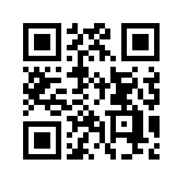
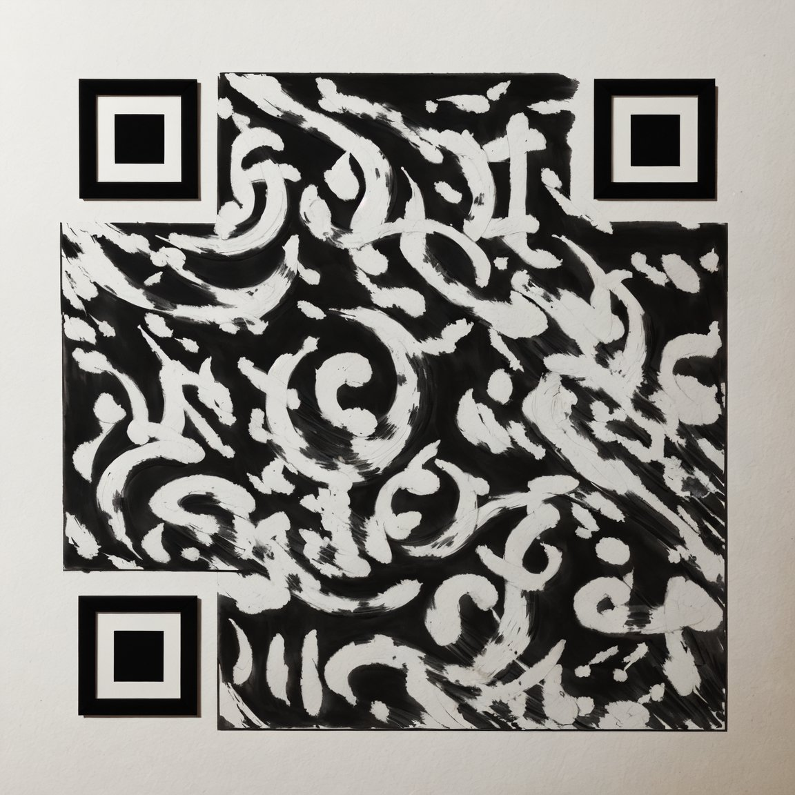
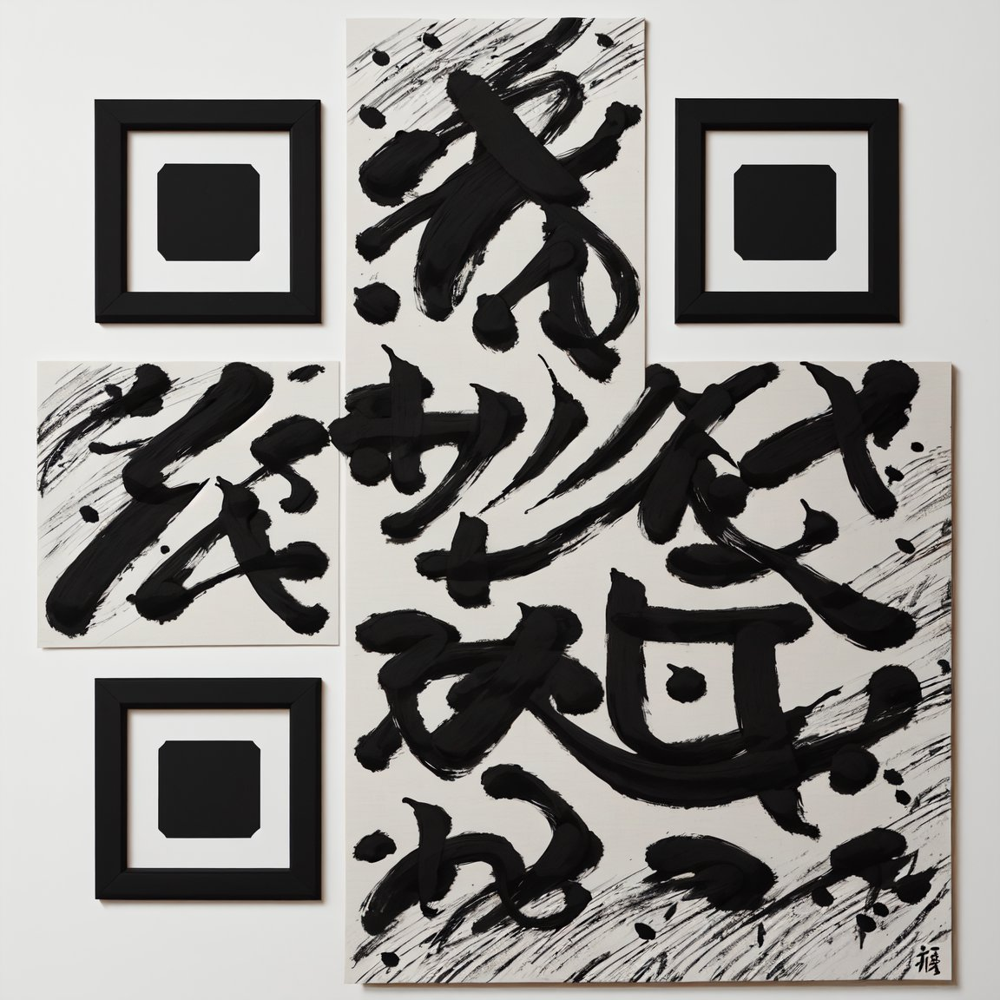

QRコードには最大３０％の誤り訂正機能があるため、崩し気味でも認識できる。

元のQRコード

このサイトのURLは文字数が多いので直接QRコードに埋め込むと密度とマス目数が増えすぎてしまい書道のような筆触が出なかった。
そのため、短縮URLを作ってそれをQRコードにすることで書道のようにある程度自由に筆を動かせるようにした。
画像生成AIで作成したQRコード（元のURL）

短縮URLを使ったもの
